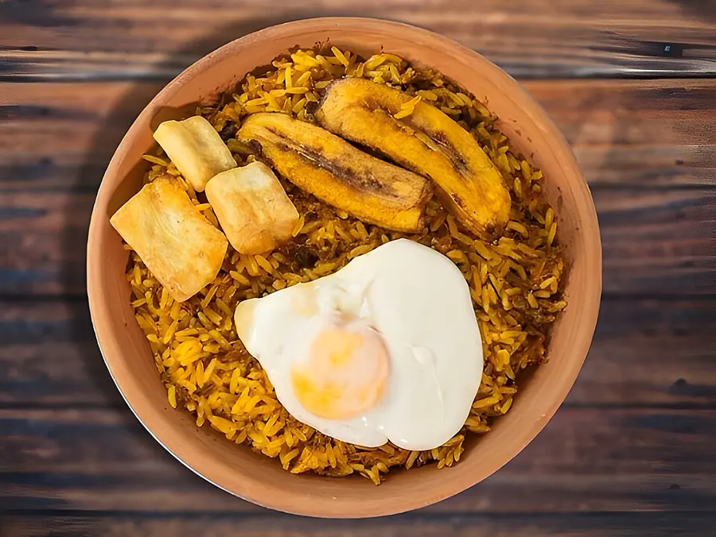
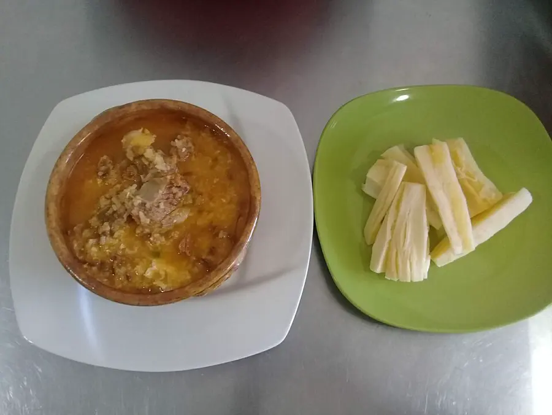
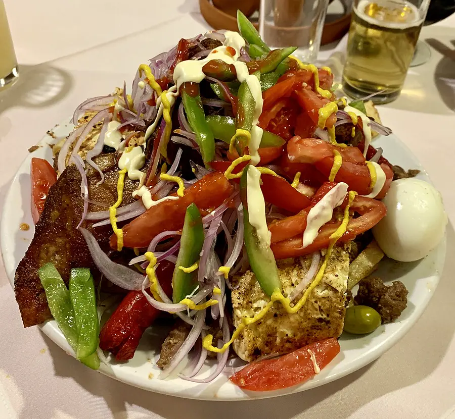
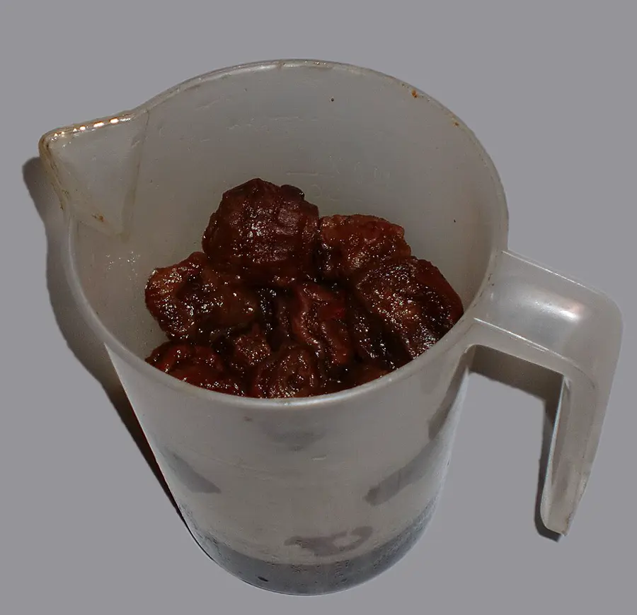
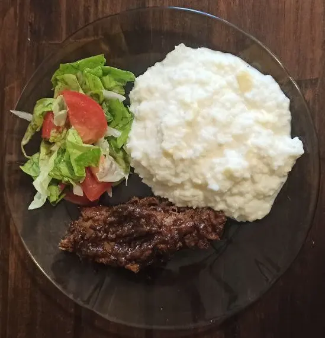
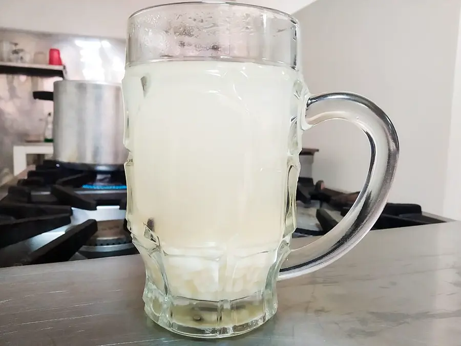

Créditos de las fotos de ejemplo
Mientras tukermes está en modo demo, las fotos de los platos vienen de Wikimedia Commons. Las kermeses y organizadores de la demo son ficticios. Las fotos se redujeron y convirtieron a WebP.

Majadito de Santa Cruz
Parallelepiped09, CC BY-SA 4.0
Salteñas en Urbarí
Ruditaly, CC BY-SA 4.0
Cuñapé al horno
Jalexiscandia, CC BY-SA 4.0Sonso de yuca
Ever Lecoña Hilari, CC BY-SA 4.0
Locro carretero
Sheyla Cordova Nuñez, CC BY 4.0
Pique macho
MollySVH, CC BY 2.0
Mocochinchi
Ferbr1, CC BY-SA 4.0
Keperí
Carlillasa, CC BY-SA 4.0
Jugo de somó
Ever Lecoña Hilari, CC BY-SA 4.0